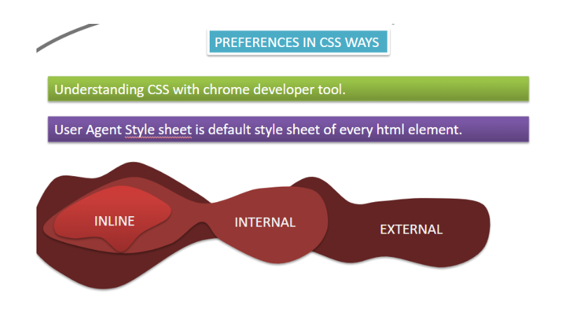

The selector points to the HTML element you want to style. The declaration block contains one or more declarations separated by semicolons. Each declaration includes a CSS property name and a value, separated by a colon. Multiple CSS declarations are separated with semicolons, and declaration blocks are surrounded by curly braces.
IMPLEMENTATION OF CSS
There are three ways of inserting a style sheet:
- Inline CSS
- Internal CSS
- External CSS
Inline CSS
An inline style may be used to apply a unique style for a single element.
To use inline styles, add the style attribute to the relevant element. The style
attribute can contain any CSS property.
Syntax: <h1 style="color:blue;text-align:center;">This is a heading</h1>
Internal CSS
An internal style sheet may be used if one single HTML page has a unique style. The internal style is defined inside the <style> element, inside the head section.
<!DOCTYPE html>
<html>
<head>
<style>
body {
background-color: linen;
}
h1 {
color: maroon;
margin-left: 40px;
}
</style>
</head>
<body>
<h1>This is a heading</h1>
<p>This is a paragraph.</p>
</body>
</html>
External CSS
With an external style sheet, you can change the look of an entire website by changing just one file! Each HTML page must include a reference to the external style sheet file inside the <link> element, inside the head section.
<!DOCTYPE html>
<html>
<head>
<link rel="stylesheet" href="mystyle.css">
</head>
<body>
<h1>This is a heading</h1>
<p>This is a paragraph.</p>
</body>
</html>
NOTE: THE FIRST PRIORITY ALWAYS GOES TO INLINE CSS. BUT WE CAN SET THE PRIORITY WITH HELP OF !important KEYWORD.
